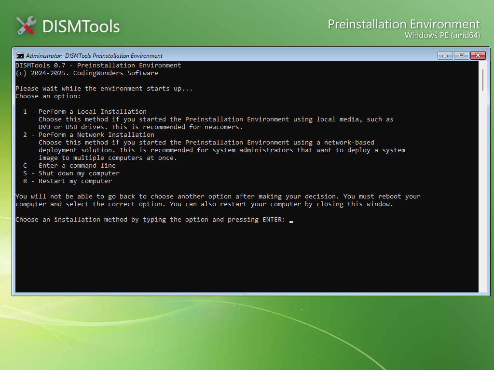

Creating an ISO file
To create a new ISO file, do the following:
- Pick your Windows image. You can either browse through your computer for a Windows image to copy, pick an image from the pop-up mounted image picker, or pick the currently loaded one. Once you pick a Windows image, you will see information about each index in the image
- Choose the architecture for the Preinstallation Environment by using the architecture list. It is recommended to pick the one that the image supports
- (Optional, new in DISMTools 0.5.1) Choose an unattended answer file to apply
- Choose the target location of the ISO file. If the target image exists, you will be asked if you want to replace it when clicking Create
With DISMTools 0.6.1 and later, you can also specify 2 options:
- Copy to Ventoy drives lets you take advantage of your Ventoy drives for operating system installation. After the ISO is generated, it will be copied automatically to all Ventoy drives you have plugged into your computer
- Use newly-signed boot binaries will make the ISO files that you create ship with EFI boot binaries signed with the Windows UEFI CA 2023 code-signing certificate. This is not checked by default because of reasons that are mentioned later in this document
VERY, VERY IMPORTANT: recent reports indicate that Windows 11 24H2 updates KB5063878 and KB5062660 can cause issues with certain SSD drives that may lead to data loss when writing big files. Either uninstall either update or use a different drive to create your ISO file. If you can't uninstall this update, be cautious. These issues are manifested when around 50 GB of data is written to the drive.
This process can take between 5 to 10 minutes, depending on the size of the Windows image and the speed of your computer's disk drive.
Windows UEFI CA 2023 information
The Windows UEFI CA 2023 certificate is now used to sign new EFI boot binaries. This is present in versions 10.1.26100.2454 and later of the Windows ADK as an option for ISO file creation.
Some computers may not boot correctly using these new EFI boot binaries, and compatibility may depend on whether or not a device that uses UEFI contains this certificate. You can check if your computer contains this certificate by running the following PowerShell command as an administrator:
[System.Text.Encoding]::ASCII.GetString((Get-SecureBootUEFI db).bytes) -match 'Windows UEFI CA 2023'

Example output of command. Source: Microsoft Tech Community
If the command returns True, your computer has this certificate. Otherwise, you may need updates to add support for this certificate. If you have doubts regarding the compatibility of your computer with this certificate, it is recommended to leave the option unchecked.
BIOS-based systems are not affected by this change.
You can learn more here: Revoking vulnerable Windows boot managers
Continuing the installation
Whether you've started the installation with HotInstall or by booting to installation media, the installation process will be the same. The Preinstallation Environment Helper will guide you through the installation process, which includes:
- Selecting the disk and partition where the operating system will be installed
- Choosing the index of the Windows image to apply
- Applying the Windows image
- Running serviceability tests
- Creating boot files
- Rebooting your system
The installation process is different if you use the PXE Helpers.
Choosing an installation method
NOTE: the following screen will not appear if you started the installation with HotInstall
When you boot up the Preinstallation Environment, you will be presented with a screen that lets you choose your preferred installation method, whether it is a local installation or a network-based one.
- Type
1and press Enter to start a local installation - Type
2and press Enter to start a network-based installation - Type
Cand press Enter to open the command line - Type
Sand press Enter to shut down the computer - Type
Rand press Enter to restart the computer

Refer to the Installing the operating system section for more information about the 2 installation modes.
Remarks
- Please make sure to commit your unsaved changes to your image before creating the ISO file